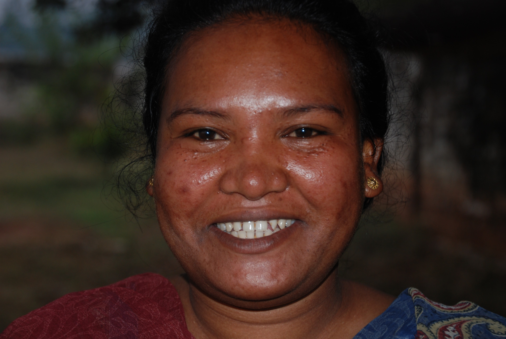
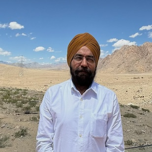
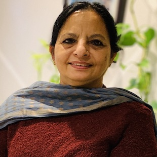
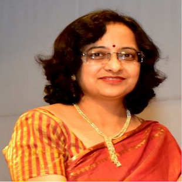
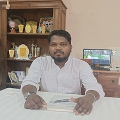
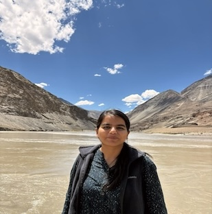
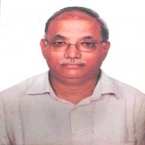
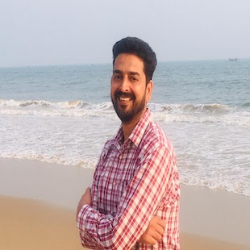

A Member to Remember

Prabha Tete (1983 - 2021)
In loving memory of Prabha, a remarkable woman who dedicated her life to being a social worker and a devoted mother. Prabha nurtured and cared for thousands of kids throughout her journey, leaving an indelible impact on their lives. Tragically, she succumbed to the second wave of Covid-19 in India in 2021, leaving behind a legacy which Sahyog is determined to carry forward. She was a woman of true radiance, full of devotion, tirelessly dutiful, genuinely loving and passionately faithful. She is survived by her three-year-old daughter.
Our Core Team

CA (Dr.) Manjeet Singh Pardesi
FounderA compassionate and dedicated Chartered Accountant, Dr. Manjeet was born in the State of Jharkhand. He earned a PhD in Commerce and possesses a Postgraduate Degree in Commerce and Social Work. Dr. Manjeet’s mother, Tej Kaur, an esteemed social worker in Odisha, played a pivotal role in nurturing his humble and caring nature, fostering a deep empathy for the underprivileged and a strong desire to assist the marginalized sections of society. Additionally, his late father, an Army officer who sacrificed his life in service to the nation, imparted in him a profound sense of commitment and duty towards his country. Dr. Manjeet resides in Delhi, India, along with his wife and three children, devoting himself wholeheartedly to his profession and his philanthropic endeavors.

Paramjeet
Pardesi
President
An highly accomplished individual, holds a double Master's degree with a specialization in Social Work. With her extensive educational background and expertise, she has played a pivotal & active role in various child care and destitute activities, in all centres of Sahyog Village.

Dr. Sutapa B.
Neogi
Advisor
Dr. Sutapa B. Neogi is Director and a public health specialist actively engaged in research and teaching at International Institute of Health Management Research (IIHMR), Delhi. She is MBBS from NRS Medical College, Kolkata, MD in Community Medicine from PGIMER, Chandigarh and DNB in Maternal and Child Health. She has a rich experience in public health and advises Sahyog Village members on a regular basis on several public health issues. She has been instrumental in setting up Rabindra Nath Health Sub Centre.

Amrit
Topno
Secretary, Jharkhand
Mr Amrit Topno oversees the financial management, accounting and record-keeping at Sahyog Village centres. He holds M.CoM and Master of Social Work. Mr. Topno has been working at Sahyog for more than 10 years and is an integral part of our Mission. A humble and dedicated member who described his motto in life as: Helping is self-satisfaction and not expecting anything in return. He lives in Ranchi.

Nicole Reiss
Wenhardt
Advisor
Nicole, a university graduate in Economics, resides in Austria with her spouse and two children, one of whom she graciously adopted from India. Over a decade ago, she initiated her journey of sponsoring children at our Birmitrapur center. With unwavering commitment, she continues to visit Sahyog centers annually, showcasing her genuine dedication to the cause.

Geetinder
Pardesi
Finance Director
An internationally trained finance professional with over a decade of experience across both non-profit and corporate sectors. She holds an M.Com and an MS in Audit Analytics, is a Fellow Chartered Accountant from India, a licensed U.S. CPA, and a Certified Information Systems Auditor (CISA). At Sahyog, Geetinder leads financial management across all centres, ensuring strong financial governance, budget compliance, and effective internal controls

Shri Vijay Kumar
Jai
Member
After retiring as a Manager from Andhra Bank, Shri Vijay Kumar Jai felt a deep desire to make a philanthropic impact. Driven by this motivation, he became a part of our organization. Since joining, Shri Jai has actively engaged in overseeing the inter-country adoption process. His commitment to philanthropy and his valuable contributions have been instrumental in furthering the organization's mission.
Alka
Kumari
Manager
Ms. Alka, serving as the Manager at SAA Ranchi, assumes a vital position in supervising the day-to-day activities of our Ranchi center while providing invaluable guidance in the realm of care and rehabilitation for children up to the age of 6. Her educational background includes a postgraduate degree in psychology from Bihar University, coupled with an MBA attained from Mahatma Gandhi Open University. Ms. Alka's dedication and expertise greatly contribute to our mission in ensuring the well-being and development of the children we serve. She lives in Ranchi with her family.

Jaswinder
Singh
Coordinator
Mr. Singh supervises and manages all administrative activities at Sahyog Village centres. Mr. Singh joined Sahyog in 2007 and has been a pillar throughout the thick and thin of the organization. He lives in Ranchi with his wife and two daughters.